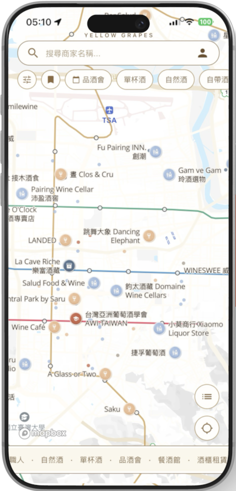

Data for hospitality
Turning hospitality
data into decisions.
Torsade Technologies builds data-driven solutions for the hospitality industry — analytics, discovery platforms and bespoke tools that help venues understand their guests and grow.
Services
Solutions for the hospitality industry, powered by data.
Data & Analytics
Dashboards and reporting that turn guest, sales and operational data into clear, actionable insight.
Discovery Platforms
Consumer-facing apps and maps that connect guests with venues — like our Yellow Grapes wine-discovery product.
Consulting & Integration
We help teams unify their data sources and build the tooling that fits how their business actually runs.
A Torsade project
Yellow Grapes
A wine-discovery map for Taiwan — bringing wine bars, cellars, tastings and 12,000+ appellations together in one place. Built and operated by Torsade as a showcase of data-driven discovery.
Visit Yellow Grapes →
About & Contact
Let's build something with your data.
Torsade Technologies Company Limited is a service business helping the hospitality industry make better use of its data. Tell us what you're working on and we'll be in touch.
contact@torsade.com.tw